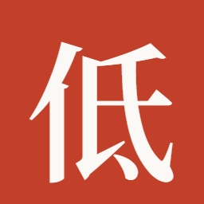

256
满饱和朱砂方（--accent #C2402A）+ 纸白宋体「低」——界面内窄栏那枚印章的放大版。
虚线以下按真实像素尺寸排列，请在 100% 缩放下横着看一遍。

256同一个符号。界面里是 34px 的一小块朱砂；到桌面上放大成整枚印章—— 这是应用标识的正常做法：界面里克制，任务栏里要被认出。
| 范围 | 母版 | 字重 | 原因 |
|---|---|---|---|
| 32–256px | icon.svg |
宋体 600 | 与界面内印章同字重，字身约占方框 74% |
| 16 / 24px | icon-small.svg |
宋体 700 | 光学补偿：16px 下 600 的横画会灰掉，加粗一档才站得住 |
为什么小尺寸不做「几何简化」：试过把「低」压成 4 笔几何骨架（亻的撇与竖、氐的横与斜钩），
16px 实测被读成「介」——笔画少了，字形就不是那个字了。改用真实字形 + 加粗后，
16px 放大仍能认出是「低」。这条是实测结论，不是判断。
也试过微软雅黑 Bold：清晰度略胜，但会破坏「宋体主导」的字体纪律，未采用。